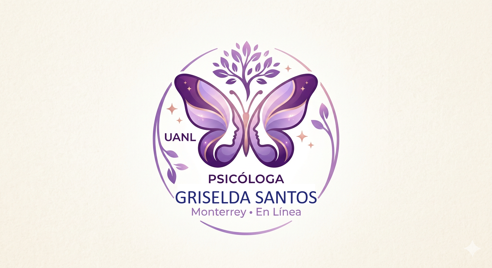

Egresada de la UANL. Brindo acompañamiento profesional en Monterrey y sesiones virtuales para todo el mundo.
Agendar SesiónUbicada en el corazón de Monterrey, N.L. en un ambiente seguro y privado.
Sesiones por videollamada con la misma calidez y efectividad profesional.
Atención basada en evidencia científica y calidez humana institucional.
Comprometida con la actualización constante para ofrecerte las mejores herramientas.
Ver Diplomados y Cursos